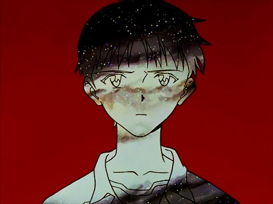
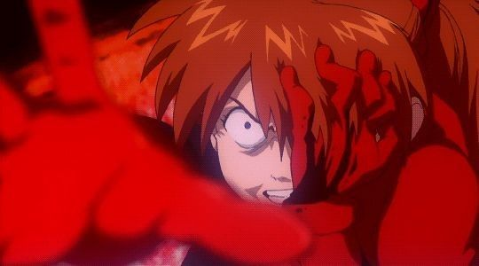
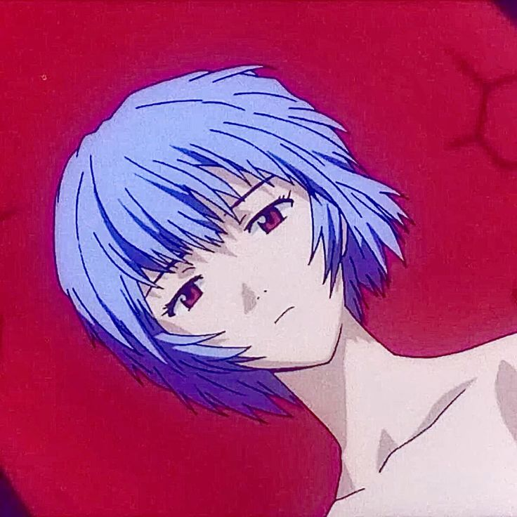
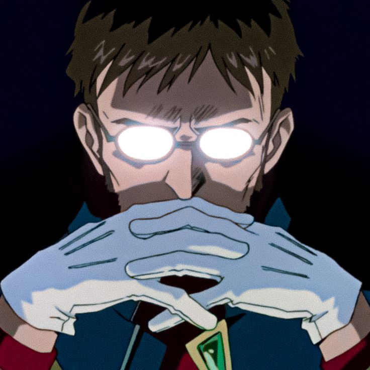
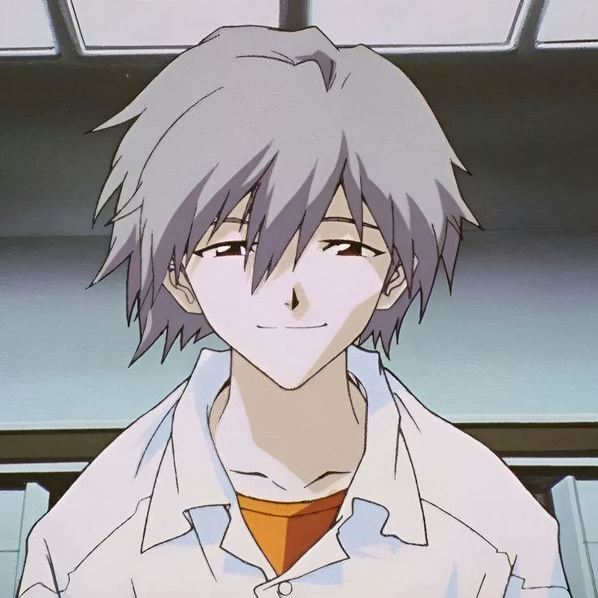

Shinji Ikari: O protagonista em seu estado mais vulnerável. No filme, ele representa o medo humano de ser ferido e a busca por um propósito em meio ao caos absoluto.
Asuka Langley Soryu: O despertar de sua vontade de viver. Sua luta contra os Evas da Seele é um dos momentos mais poderosos de resiliência em toda a franquia.
Rei Ayanami: O catalisador da mudança. No filme, ela transcende seu papel de "boneca" e assume o controle do destino da Terra, entregando a decisão final a Shinji.
Gendo Ikari: O manipulador por trás dos acontecimentos. Ele busca usar o Projeto de Instrumentalidade para se reencontrar com sua esposa, revelando um egoísmo profundo escondido sob sua frieza.
Kaworu Nagisa: A presença simbólica do afeto e da aceitação. No filme, ele aparece como parte da consciência de Shinji, influenciando sua decisão sobre a humanidade.





volte para a pagina inicial